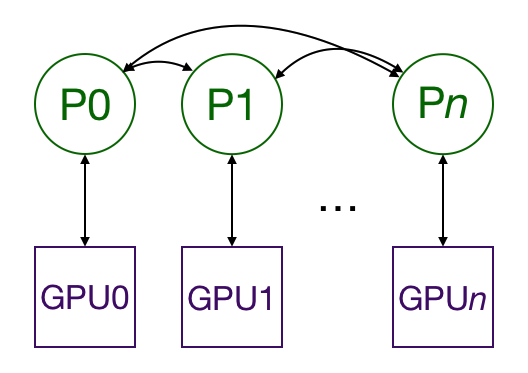

翻译自: Distributed data parallel training in Pytorch
动机 加速神经网络最容易的方式就是使用单个 GPU, 在一些类型的计算中, 比如在神经网络中常见的矩阵乘法和矩阵加法, 与 CPU 相比, GPU 可以提供巨大的速度提升. 由于模型以及数据集变得越来越大, 单个 GPU 很快变得不够用了. 例如, 像 BERT 和 GPT-2 这样的大语言模型都是在数百张 GPUs 上训练的. 为了可以使用多个 GPU 来训练, 我们必须有一种方式可以在不同的 GPU 之间分割模型和数据, 并协调训练.
为什么需要分布式的数据并行 Pytorch 有两种方式在多个 GPU 之间分割模型和数据: nn.DataParallerl 和 nn.DistributedDataParallel. nn.DataParallel 比较简单易用, 只需要包装一下模型并运行你的训练脚本就可以了. 然而, 由于nn.DataParallel 使用单个进程来计算模型的权重, 并在每一个批次中将这些权重分发到每个 GPU, 因此网络(network) 很快就成为了一个计算瓶颈, GPU 的利用率往往非常低. 此外, nn.DataParallel 要求所有的 GPU 都要在同一个节点当中, 并且不能与 Apex 协作用于混合精度训练 (mixed-precision training).
已有的文档是不完善的 通常来说, Pytorch 文档是全面且清晰的, 特别是在版本 1.0.x. 然而, 在如何使用 DistributedDataParallel 方面的所有例子和教程却都是无法使用的, 不完整的, 或者有很多不相关的功能。
Pytorch 提供了一个关于使用 AWS 进行分布式训练的教程, 这很好地告诉你如何在 AWS 端进行各种设置. 不过, 剩下的部分就有点乱(messy), 因为它花了很长时间去展示如何计算一些指标, 然后再回到来展示如何包装你的模型, 并且启动多个进程. 同时, 它也没有描述 nn.DistributedParallel 是做什么的, 这使得一些相关的代码块难以理解.
这篇关于用 Pytorch 写分布式应用的教程 有太多的细节对于第一次了解的人来说是不必要的, 并且它对于一些没有强大的 Python 多进程背景的人来说是难以理解的. 这篇教程花了大量的时间在复制 nn.DistributedDataParallel 的功能. 然而, 它却没有高屋建瓴地介绍它的作用, 同时也没有提供关于如何使用它的见解.
还有一篇Pytorch 教程 是关于入门分布式数据并行的. 它告诉了如何进行一些配置, 但却没有介绍这些配置的作用, 然后展示了一些用于在多个 GPU 上分割模型的代码以及做了一个优化的步骤. 不幸的是, 我非常确定这里所写的代码并不能运行 (这里的函数名不匹配). 此外, 它没有告诉你如何运行这代码. 像前面的教程一样, 它也没有对分布式训练的工作方式做一个高层次的概述。
Pytorch 提供的最接近 MWE 的例子是 Imagenet 训练的例子. 不幸的是, 这个例子也展示了 Pytorch 的几乎所有的其它功能, 所以很难挑出与分布式多 GPU 相关的内容.
Apex 提供了他们自己的关于 Pytorch Imagenet 例子的版本 . 这篇文档告诉你他们关于 nn.DistributedDataParallel 的版本是 Pytorch 版本的直接替代, 这只有在学习完如何使用 Pytorch 的版本才有所帮助.
而这篇教程 非常棒地说明了”在引擎盖下发生了什么”以及”nn.DistributedDataParallel 和 nn.DataParallel有什么不同” . 然而, 它却没有给出如何使用 nn.DataParallel 的代码例子.
大纲 本篇教程针对那些已经熟悉用 Pytorch 来训练神经网络的同学, 我不会去介绍所有那些部分的代码. 我将从总结一张大图开始. 然后我会展示一个关于在 MNIST 数据集上利用 GPU 进行训练的例子. 接着, 我修改这个例子用于在多个 GPU 上进行训练, 有可能在多个节点进行, 同时一行行地解释代码的变化. 重要的是, 我也会介绍如何运行代码. 作为奖励(As a bonus), 我也会说明如何使用 Apex 去进行简单的混合精度的分布式训练.
大图概览 DistributedDataParallel 的多进程复制模型到多个 GPU 当中, 每一个 GPU 都由一个进程控制. (一个进程就是运行在计算机中的一个 Python 实例; 通过并行运行多个进程, 我们可以利用多核 CPU 处理器的优势. 你可以让一个进程控制多个 GPU , 但是这应该会比让一个进程控制一个 GPU 要慢得多. 为每个 GPU 设置多个工人(worker)进程来获取数据也是可行的, 但是为了简单起见, 我打算省略这部分内容.) 多个 GPU 可以都在一个节点中, 也可以遍布在多个节点中. (一个节点指的是一台计算机, 包含 CPU 和 GPU. 如果你正在使用 AWS, 那么一个节点就是一个 ECS 实例.) 每一个进程进行一些相同的任务, 并且每个进程都与其它所有的进程进行通信. 在多个 GPU 之间, 只有梯度会被传送, 如此网络通信就是一个较小的瓶颈了.

在训练过程中, 每个进程从硬盘中加载它们自己对应的小批量数据, 然后传送到它们对应的 GPU. 每一个 GPU 进行它们各自的前向传播过程, 然后在多个 GPU 中的梯度会被集中计算(all-reduced). 由于每一个层的梯度不依赖于上一个层的梯度, 因此梯度的集中计算(all-reduced)是与后向传播同时(concurrently)计算的，以进一步缓解网络瓶颈。在反向传播结束时, 每一个节点都有平均的梯度, 这确保了模型的权重保持同步.
所有这些要求了(可能在多个节点之中的)多个进程是同步的并且保持通信. Pytorch 通过 distributed.init_precoess_group 函数来完成这件事情. 这个函数需要知道去哪找进程 0, 以便所有的进程都能同步, 同时还需要知道预期的进程总数. 每一个进程还需要知道进程的总数, 它在所有进程当中的排序(rank)以及要用哪个 GPU. 进程的总数通常称为 world size 世界尺度. 最后, 每一个进程需要知道要工作在哪一个数据, 以便批量数据之间不会重叠. Pytorch 提供了 nn.utils.data.DistributedSampler 来完成这件事.
最小工作例子与解释 为了说明如何完成这件事, 我将创建一个在 MNIST 数据集上训练的例子, 然后对其进行修改，以便在多个节点的多个GPU上运行，最后还允许混合精度的训练。
非多进程 首先, 导入我们所需要的包.
1 2 3 4 5 6 7 8 9 10 11 import osfrom datatime import datetimeimport argparseimport torch.multiprocessing as mpimport torchvisionimport torchvision.transformers as transformersimport torchimport torch.nn as nnimport torch.distributed as distfrom apex.parallel import DistributedDataParallel as DDPfrom apex import amp
我们定义一个非常简单的卷积模型用于预测 MNIST.
1 2 3 4 5 6 7 8 9 10 11 12 13 14 15 16 17 18 19 20 21 22 23 class ConvNet (nn.Module): def __init__ (self, num_classes=10 ): super (ConvNet, self).__init__() self.layer1 = nn.Sequential( nn.Conv2d(1 , 16 , kernel_size=5 , stride=1 , padding=2 ), nn.BatchNorm2d(16 ), nn.ReLU(), nn.MaxPool2d(kernel_size=2 , stride=2 ) ) self.layer2 = nn.Sequential( nn.Conv2d(16 , 32 , kernel_size=5 , stride=1 , padding=2 ), nn.BatchNorm2d(32 ), nn.ReLU(), nn.MaxPool2d(kernel_size=2 , stride=2 ) ) self.fc = nn.Linear(7 * 7 * 32 , num_classes) def forward (self, x ): x = self.layer1(x) x = self.layer2(x) x = x.view(x.size(0 ), -1 ) x = self.fc(x) return x
main() 函数接收一些参数, 然后运行训练函数.
1 2 3 4 5 6 7 8 def main (): parser = argparse.ArgumentParser() parser.add_argument('-n' , '--nodes' , default=1 , type =int , metavar='N' ) parser.add_argument('-g' , '--gpus' , default=1 , type =int , help ='number of gpus per node' ) parser.add_argument('-nr' , '--nr' , default=0 , type =int , help ="ranking within the nodes" ) parser.add_argument('--epochs' , default=2 , type =int , metavar='N' , help ='number of total epochs to run' ) args = parse.parse_args() train(0 , args)
train() 函数
1 2 3 4 5 6 7 8 9 10 11 12 13 14 15 16 17 18 19 20 21 22 23 24 25 26 27 28 29 30 31 32 33 34 35 36 37 38 39 40 41 42 43 44 45 def train (gpu, args ): torch.manual_seed(0 ) model = ConvNet() torch.cuda.set_device(gpu) model.cuda(gpu) batch_size = 100 criterion = nn.CrossEntropyLoss().cuda(gpu) optimizer = torch.optim.SGD(model.parameters(), 1e-4 ) train_dataset = torchvision.datasets.MNIST(root='./data' , train=True , trainsform=transformers.ToTensor(), download=True ) train_loader = torch.utils.data.DataLoader(dataset=train_dataset, batch_size=batch_size, shuffle=True , num_workers=0 , pin_memory=True ) start = datetime.now() total_step = len (train_loader) for epoch in range (args.epochs): for i, (images, labels) in enumerate (train_loader): images = images.cuda(non_blocking=True ) labels = labels.cuda(non_blocking=True ) outputs = model(images) loss = criterion(outputs, labels) optimizer.zero_grad() loss.backward() optimizer.step() if (i + 1 ) % 100 == 0 and gpu == 0 : print ('Epoch [{}/{}], Step [{}/{}], Loss: {:.4f}' .format ( epoch + 1 , args.epochs, i + 1 , total_step, loss.item()) ) if gpu == 0 : print ("Training complete in: " + str (datetime.now() - start))
最后, 我们确保 main() 函数被调用.
1 2 if __name__ == '__main__' : main()
这里有一些暂时还不需要的额外的东西, 但将这整个骨架放在这里是有好处的.
我们可以通过在打开一个终端并执行 python src/mnist.py -n 1 -g 1 -nr 0 来运行这段代码.
多进程 为了用多进程来完成这件事, 我们需要一个为每一个 GPU 启动一个进程的脚本. 每一个进程需要知道要用哪一个 GPU, 以及它在所有运行中的进程中的排序. 我们需要在每一个节点都运行这个脚本.
让我们看一下每一个函数的变化. 我已经将新代码用栅栏包围起来, 以便容易查找.
1 2 3 4 5 6 7 8 9 10 11 12 13 14 15 def main (): parser = argparse.ArgumentParser() parser.add_argument('-n' , '--nodes' , default=1 , type =int , metavar='N' ) parser.add_argument('-g' , '--gpus' , default=1 , type =int , help ='number of gpus per node' ) parser.add_argument('-nr' , '--nr' , default=0 , type =int , help ="ranking within the nodes" ) parser.add_argument('--epochs' , default=2 , type =int , metavar='N' , help ='number of total epochs to run' ) args = parse.parse_args() args = parser.parse_args() args.world_size = args.gpus * args.nodes os.environ['MASTER_ADDR' ] = '10.57.23.164' os.environ['MASTER_PORT' ] = '8888' mp.spawn(train, nprocs=args.gpus, args=(args, ))
args.nodes: 我们计划使用的节点总数args.gpus: 一个节点中的 GPU 总数args.nr: 当前节点在所有节点中的排序, 从 0 到 args.nodes - 1
代码详解
args.world_size = args.gpus * args.nodes
基于节点总数和一个节点中包含的 GPU 数, 我们可以计算 word_size, 或者说是将要运行的进程的总数, 这等同于 GPU 的总数, 因为我们为每一个 GPU 分配一个 进程.
os.environ['MASTER_ADDR'] **=** '10.57.23.164'
os.environ['MASTER_PORT'] **=** '8888'
这两行代码告诉多进程模块寻找进程 0 时的 IP 地址和端口号. 它需要这个地址, 以便所有的进程在初期都能同步.
mp.spawn(train, nprocs**=**args.gpus, args**=**(args,))
现在，我们不再是只运行一次 train 函数，而是会生成 args.gpus 个进程，每个进程都会运行 train(i, args) 函数，其中 i 为进程的编号, 同时也对应 GPU 的编号, 其取值范围为 0 到 args.gpus - 1。请记住, 我们在每一个节点运行 main() 函数, 以便在总体上有 args.nodes * args.gpus = args.world_size 个进程. 关于 train(i, args) 函数中参数 i 是如何传入的, 请看 文末的 WIKI.
我们可以在终端中运行 export MASTER_ADDR=10.57.23.164 和 export MASTER_PORT=8888，而不使用 os.environ['MASTER_ADDR'] **=** '10.57.23.164' 和 os.environ['MASTER_PORT'] **=** '8888' 这两行代码。
接下来, 让我们看一下 train 函数的变化. 我将同样用栅栏包围新的代码.
1 2 3 4 5 6 7 8 9 10 11 12 13 14 15 16 17 18 19 20 21 22 23 24 25 26 27 28 29 30 31 32 33 34 35 36 37 38 39 40 41 42 43 44 45 46 47 48 49 50 51 52 53 def train (gpu, args ): rank = args.nr * args.gpus + gpu dist.init_process_group( backend='nccl' , init_method='env://' , world_size=args.world_size, rank=rank ) torch.manual_seed(0 ) model = ConvNet() torch.cuda.set_device(gpu) model.cuda(gpu) batch_size = 100 criterion = nn.CrossEntropyLoss().cuda(gpu) optimizer = torch.optim.SGD(model.parameters(), 1e-4 ) model = nn.parallel.DistributedDataParallel(model, device_ids=[gpu]) train_dataset = torchvision.datasets.MNIST( root='./data' , train=True , transform=transforms.ToTensor(), download=True ) train_sampler = torch.utils.data.distributed.DistributedSampler( train_dataset, num_replicas=args.world_size, rank=rank ) train_loader = torch.utils.data.DataLoader( dataset=train_dataset, batch_size=batch_size, shuffle=False , num_workers=0 , pin_memory=True , sampler=train_sampler) ...
为了简洁起见，我已经从这个例子中删除了训练循环，并用 ... 替换了它，但是在完整的脚本 中仍然存在。
代码详解
rank **=** args.nr ***** args.gpus **+** gpu
这是当前进程在所有进程当中的全局排序(一个进程对应一个GPU).
dist.init_process_group(
backend='nccl',
init_method='env://',
world_size=args.world_size,
rank=rank
)
初始化进程并与其它进程连接. 这是”阻塞态”, 意味着直到所有进程都加入以后进程才会继续工作. 我们在这里使用了 ncll 后端, 因为 Pytorch Docs 说了它是可用的最快的一个. init_method 告诉进程组去哪寻找一些设置. 在这个例子当中, 它在环境变量当中寻找 MASTER_ADDR and MASTER_PORT , 这两个变量我们在 main 函数里设置了. 我本可以在那里设置 word_size, 但是我选择了将它设置为关键词参数, 与当前进程的全局排名一起在此处设置.
model = nn.parallel.DistributedDataParallel(model, device_ids=[gpu])
将模型包装成 DistributedDataParallel 模型. 这把模型复制到GPU上进行处理。
train_sampler = torch.utils.data.distributed.DistributedSampler(
train_dataset,
num_replicas=args.world_size,
rank=rank
)
torch.utils.data.distributed.DistributedSampler 确保了每个进程获取的是训练数据中不同的部分.
train_loader = torch.utils.data.DataLoader(
dataset=train_dataset,
batch_size=batch_size,
shuffle=False,
num_workers=0,
pin_memory=True,
sampler=train_sampler)
shuffle=False 请使用 nn.utils.data.DistributedSampler 而不是通常的随机打乱的方式。
要在 4 个节点上, 其中每个节点有 8 个GPU, 运行此程序，我们需要 4 个终端（每个节点一个）。在节点 0:
1 $ python src/mnist-distributed.py -n 4 -g 8 -nr 0
然后, 在其它节点:
1 $ python src/mnist-distributed.py -n 4 -g 8 -nr i
其中, $i \in 1, 2, 3$/ 换句话说, 我们在每个节点都运行这个脚本, 告诉它在训练开始之前启动与彼此同步的 args.gpus 个进程。
请注意，现在的有效批处理大小是每个 GPU 的批处理大小（脚本中的值）* GPU总数（worldsize）。
使用 Apex 进行混合精度训练 混合精度训练, float(FP32) 和 half(FP16) 精度的结合的训练, 允许我们使用更大的批量大小以及利用 NVIDIA Tensor Cores 的优势进行快速计算. AWS p3 实例使用 NVIDIA Tesla V100 GPUs with Tensor Cores. 我们只需要改变 train 函数. 为了简洁起见, 我从上面的例子当中拿掉了数据加载的代码以及反向传播以后的代码, 并且用 ... 进行了代替, 但是它们仍可以在完整脚本 中获取.
1 2 3 4 5 6 7 8 9 10 11 12 13 14 15 16 17 18 19 20 21 22 23 24 25 26 27 28 29 30 31 32 33 34 35 36 37 38 39 40 41 rank = args.nr * args.gpus + gpu dist.init_process_group( backend='nccl' , init_method='env://' , world_size=args.world_size, rank=rank) torch.manual_seed(0 ) model = ConvNet() torch.cuda.set_device(gpu) model.cuda(gpu) batch_size = 100 criterion = nn.CrossEntropyLoss().cuda(gpu) optimizer = torch.optim.SGD(model.parameters(), 1e-4 ) model, optimizer = amp.initialize(model, optimizer, opt_level='O2' ) model = DDP(model) ... start = datetime.now() total_step = len (train_loader) for epoch in range (args.epochs): for i, (images, labels) in enumerate (train_loader): images = images.cuda(non_blocking=True ) labels = labels.cuda(non_blocking=True ) outputs = model(images) loss = criterion(outputs, labels) optimizer.zero_grad() **with amp.scale_loss(loss, optimizer) as scaled_loss: scaled_loss.backward()** optimizer.step() ...
代码详解
model, optimizer = amp.initialize(model, optimizer, opt_level='O2')
amp.initialize 包装模型和优化器以便用于混合精度训练. 注意, 在调用 amp.initialize 之前模型必须要在正确的 GPU 上. opt_level从O0开始，使用所有浮点数，到 O3为止，始终使用半精度。 O1和O2是不同程度的混合精度，在Apex文档 中可以找到详细信息。是的，所有这些代码中的第一个字符都是大写字母“O”，而第二个字符是数字。如果您使用零代替它，将会收到令人困惑的错误消息。
model = DDP(model)
apex.parallel.DistributedDataParallel 是 nn.DistributedDataParallel 的即插即用替代品。我们不再需要指定 GPU ，因为 Apex 每个进程只允许一个 GPU。它还假设脚本在将模型移动到 GPU 之前调用torch.cuda.set_device(local_rank)。
with amp.scale_loss(loss, optimizer) as scaled_loss:
scaled_loss.backward()
混合精度训练需要对损失进行缩放，以防止梯度下溢。Apex 会自动完成此操作。
这个脚本的运行方式与分布式训练脚本相同。
感谢 Many thanks to the computational team at VL56 for all your work on various parts of this. I’d like to especially thank Stephen Kottman, who got a MWE up while I was still trying to figure out how multiprocessing in Python works, and then explained it to me, and Andy Beam, who greatly improved the first draft of this tutorial.
非常感谢 VL56 的计算团队，感谢你们在各个部分的工作。我想特别感谢 Stephen Kottman，他在我还在试图弄清楚 Python 中的多处理是如何工作的时候，就弄出了一个 MWE，然后向我解释，还有 Andy Beam，他大大改进了本教程的初稿。
完整的脚本 1 2 3 4 5 6 7 8 9 10 11 12 13 14 15 16 17 18 19 20 21 22 23 24 25 26 27 28 29 30 31 32 33 34 35 36 37 38 39 40 41 42 43 44 45 46 47 48 49 50 51 52 53 54 55 56 57 58 59 60 61 62 63 64 65 66 67 68 69 70 71 72 73 74 75 76 77 78 79 80 81 82 83 84 85 86 87 88 89 90 91 92 93 94 95 96 97 98 99 100 import osfrom datetime import datetimeimport argparseimport torch.multiprocessing as mpimport torchvisionimport torchvision.transforms as transformsimport torchimport torch.nn as nnimport torch.distributed as distfrom apex.parallel import DistributedDataParallel as DDPfrom apex import ampdef main (): parser = argparse.ArgumentParser() parser.add_argument('-n' , '--nodes' , default=1 , type =int , metavar='N' , help ='number of data loading workers (default: 4)' ) parser.add_argument('-g' , '--gpus' , default=1 , type =int , help ='**number of gpus per node**' ) parser.add_argument('-nr' , '--nr' , default=0 , type =int , help ='**ranking within the nodes**' ) parser.add_argument('--epochs' , default=2 , type =int , metavar='N' , help ='number of total epochs to run' ) args = parser.parse_args() args.world_size = args.gpus * args.nodes os.environ['MASTER_ADDR' ] = '10.57.23.164' os.environ['MASTER_PORT' ] = '8888' mp.spawn(train, nprocs=args.gpus, args=(args,)) class ConvNet (nn.Module): def __init__ (self, num_classes=10 ): super (ConvNet, self).__init__() self.layer1 = nn.Sequential( nn.Conv2d(1 , 16 , kernel_size=5 , stride=1 , padding=2 ), nn.BatchNorm2d(16 ), nn.ReLU(), nn.MaxPool2d(kernel_size=2 , stride=2 )) self.layer2 = nn.Sequential( nn.Conv2d(16 , 32 , kernel_size=5 , stride=1 , padding=2 ), nn.BatchNorm2d(32 ), nn.ReLU(), nn.MaxPool2d(kernel_size=2 , stride=2 )) self.fc = nn.Linear(7 *7 *32 , num_classes) def forward (self, x ): out = self.layer1(x) out = self.layer2(out) out = out.reshape(out.size(0 ), -1 ) out = self.fc(out) return out def train (gpu, args ): rank = args.nr * args.gpus + gpu dist.init_process_group(backend='nccl' , init_method='env://' , world_size=args.world_size, rank=rank) torch.manual_seed(0 ) model = ConvNet() torch.cuda.set_device(gpu) model.cuda(gpu) batch_size = 100 criterion = nn.CrossEntropyLoss().cuda(gpu) optimizer = torch.optim.SGD(model.parameters(), 1e-4 ) model = nn.parallel.DistributedDataParallel(model, device_ids=[gpu]) train_dataset = torchvision.datasets.MNIST(root='./data' , train=True , transform=transforms.ToTensor(), download=True ) train_sampler = torch.utils.data.distributed.DistributedSampler(train_dataset, num_replicas=args.world_size, rank=rank) train_loader = torch.utils.data.DataLoader(dataset=train_dataset, batch_size=batch_size, shuffle=False , num_workers=0 , pin_memory=True , sampler=train_sampler) start = datetime.now() total_step = len (train_loader) for epoch in range (args.epochs): for i, (images, labels) in enumerate (train_loader): images = images.cuda(non_blocking=True ) labels = labels.cuda(non_blocking=True ) outputs = model(images) loss = criterion(outputs, labels) optimizer.zero_grad() loss.backward() optimizer.step() if (i + 1 ) % 100 == 0 and gpu == 0 : print ('Epoch [{}/{}], Step [{}/{}], Loss: {:.4f}' .format (epoch + 1 , args.epochs, i + 1 , total_step, loss.item())) if gpu == 0 : print ("Training complete in: " + str (datetime.now() - start)) if __name__ == '__main__' : main()
WIKI Q1
def train(gpu, args)
mp.spawn(train, nprocs=args.gpus, args=(args,))
train 函数的 gpu 参数是怎么被传入进去的, 并且怎么会和进程号一一对应呢?
在这个代码中，train 函数的 gpu 参数是在 mp.spawn(fn=train, nprocs=args.gpus, args=(args,)) 这一行代码中被传入的。内部使用了 Python 的 multiprocessing 模块来实现多进程训练. mp.spawn中 fn 参数指定了多进程的入口函数, 该函数以fn(i, *args)的形式调用，其中i是进程索引，args是由一个参数元组传入, 即参数 args=(args, ). 同时, nprocs 参数指定了进程数.
让我们来看源代码:
1 2 3 4 5 6 7 8 9 10 11 12 13 14 15 16 17 18 19 20 21 22 23 24 25 26 27 28 29 30 def spawn (fn, args=(1 , join=True , daemon=False , start_method='spawn' ): if start_method != 'spawn' : msg = ('This method only supports start_method=spawn (got: %s).\n' 'To use a different start_method use:\n ' ' torch.multiprocessing.start_process(...)' % start_method) warnings.warn(msg) return start_processes(fn, args, nprocs, join, daemon, start_method='spawn' ) def start_processes (fn, args=(1 , join=True , daemon=False , start_method='spawn' ): mp = multiprocessing.get_context(start_method) error_queues = [] processes = [] for i in range (nprocs): error_queue = mp.SimpleQueue() process = mp.Process( target=_wrap, args=(fn, i, args, error_queue), daemon=daemon, ) process.start() error_queues.append(error_queue) processes.append(process) context = ProcessContext(processes, error_queues) if not join: return context while not context.join(): pass
1 2 3 4 5 6 7 8 for i in range (nprocs): error_queue = mp.SimpleQueue() process = mp.Process( target=_wrap, args=(fn, i, args, error_queue), daemon=daemon, ) ...
根据这个代码片, 我们可以发现, spawn() 函数中传入的参数 args, 会最终成为 mp.Process() 类的构造参数 args 中一个元素, 该构造参数 args 中还包括 i, 这指的是进程的索引. 因此, 我们就可以很清楚的知道 train(gpu, args) 中的参数 gpu 是如何被传入的并与进程索引一一对应了.